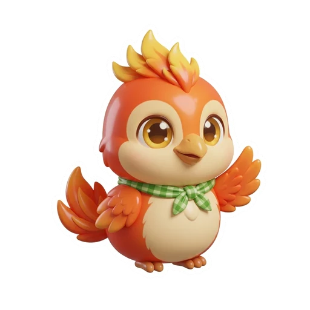
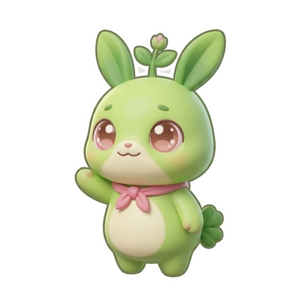

BEAR
1
Grade 3 English · The Bear and I · Clean Cars · Form A


 enemyC
enemyC trapE
trapE meltingF
meltingF gasolineA
gasolineA energyD
energyD expensiveB
expensiveB



| Poem clue (p. 47) | Polar bear | The man |
|---|---|---|
| 1. eats fish and is hungry | ✓ | ✓ |
| 2. is twice the man’s size | ✓ | |
| 3. falls into the water | ✓ | ✓ |
| 4. lives in a house | ✓ |
| Car (p. 54) | Energy | Good | Bad |
|---|---|---|---|
| Gasoline | gasoline | fast | noisy and dirty |
 Biofuel Biofuel | plants like corn | fast | very noisy |
| Electric | electricity | fast, quiet and clean | expensive |
 Air Air | air | quiet and clean | small and slow |
| Solar | the sun | not noisy, not dirty | can be expensive |
